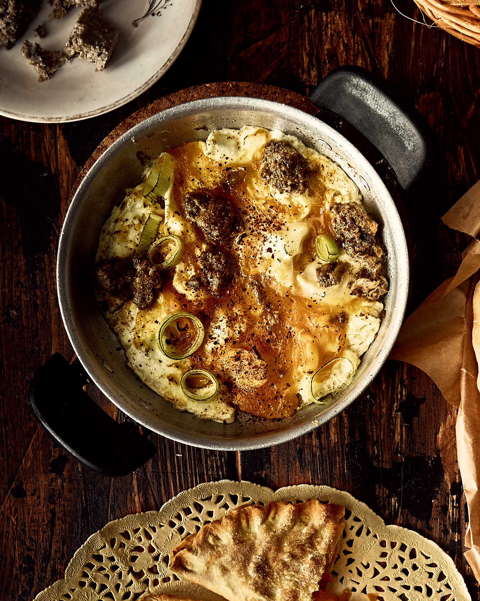

Φούστο(υ)ρον, η ποντιακή ομελέτα

- Ζεσταίνουμε 80 γρ. βούτυρο σε μέτρια φωτιά σε ένα μεγάλο αντικολλητικό τηγάνι, μέχρι να λιώσει, αλλά να μην κάψει ή σκουρύνει.
- Προσθέτουμε 4 μέτρια πράσα (σε ροδέλες) και λίγο αλάτι και τα σοτάρουμε για 6-7 λεπτά, μέχρι να μαλακώσουν.
- Σπάμε 4-5 αυγά και τα ρίχνουμε στο τηγάνι χωρίς να τα ανακατέψουμε. Χρησιμοποιούμε ένα πιρούνι για να σπάσουμε τους κρόκους.
- Προσθέτουμε 120 γρ. θρυμματισμένη φέτα ή καβουρμά, σκορπίζοντας τον ομοιόμορφα.
- Αφήνουμε το μείγμα να ψηθεί για 3-4 λεπτά χωρίς να ανακατέψουμε.
- Σκεπάζουμε το τηγάνι με καπάκι για να ψηθούν καλά τα ασπράδια των αυγών.
- Ρίχνουμε λίγο αλάτι και σερβίρουμε αμέσως με τηγανητές πατάτες.
 Spoon Theory
Spoon Theory